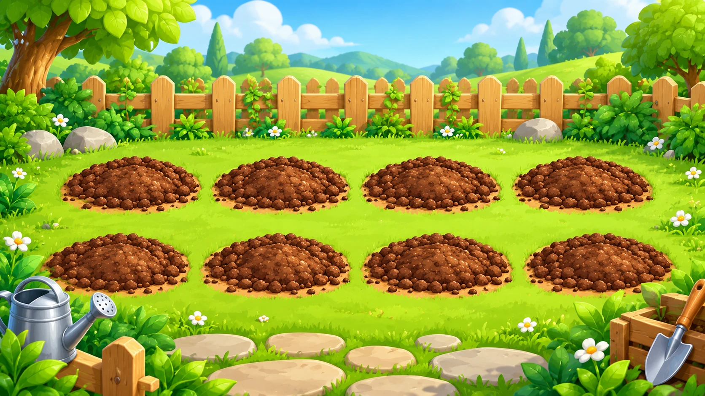
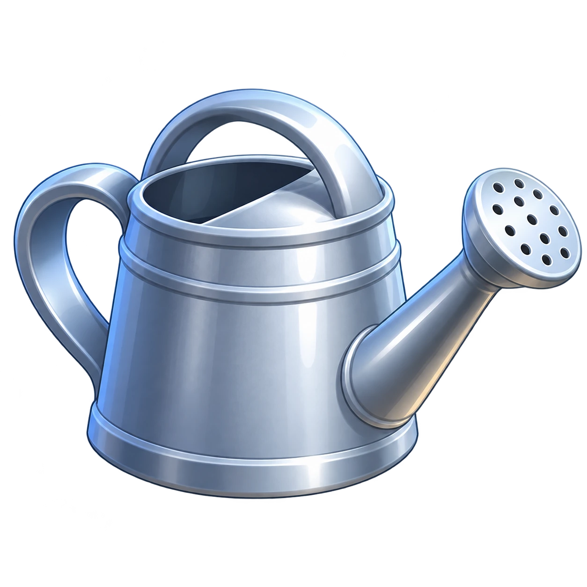

YOUR LITTLE PATCH OF GREEN
Where will your garden grow?


Swipe the garden left or right to see all eight patches.
Choose the can. Hold it over a plant, or tap a plant.
YOUR LITTLE PATCH OF GREEN


Swipe the garden left or right to see all eight patches.